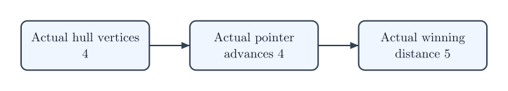
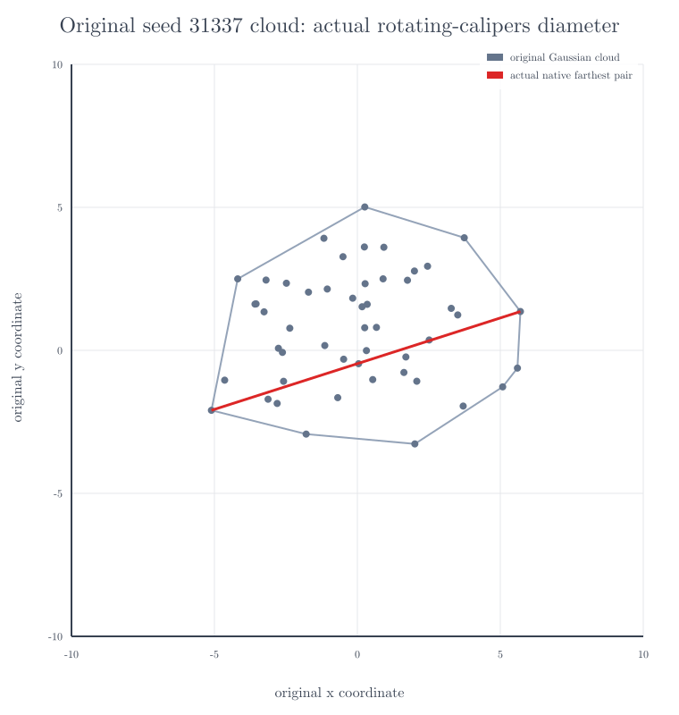
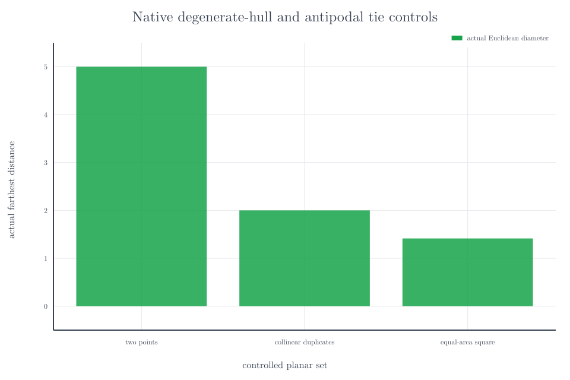
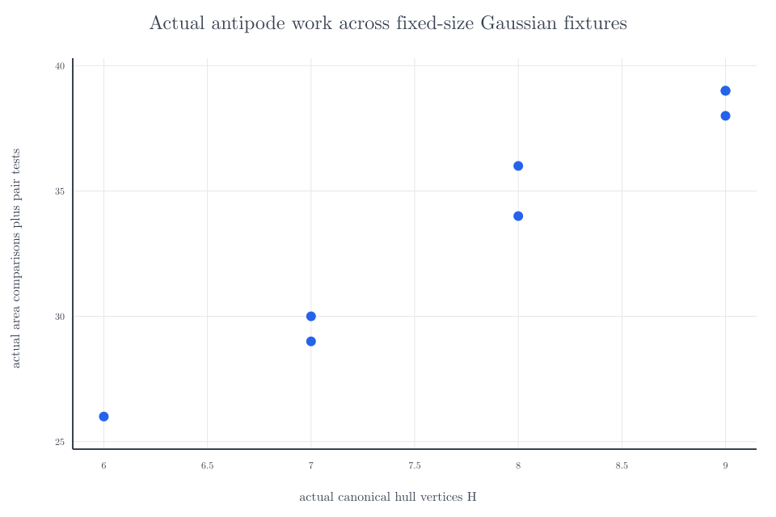

Rotating calipers: exact support-area order and actual antipodal pairs
Abstract
Given planar points, find the two with greatest Euclidean separation. The farthest pair lies on the convex hull. The native implementation now performs a genuine forward rotating-antipode walk rather than the old exhaustive hull-pair scan. Actual area and pair events explain the original hand square and seeded Gaussian cloud.
Mechanism and mathematical scope
For a CCW hull edge (p_i,p_{i+1}), advance its opposite support point while the oriented triangle area increases. The support pointer moves forward as the edge rotates, giving O(H) total area/pair tests after hull construction. Equal-area ties require testing both opposite endpoints. The native area ordering compares the exact sign of cross(p_{i+1}-p_i,p_{j+1}-p_i)-cross(p_{i+1}-p_i,p_j-p_i), using the shared exact dyadic predicate rather than subtracting rounded cross products. Euclidean candidate distances use widened hypot and finite double outputs. Hull preparation costs O(N log N); the actual antipode walk is O(H). Equal represented distances keep the first encountered pair.
A tiny actual producing history
The table and native concept diagram read the same producing execution. Every block below is a complete editable C++ program.
#include <dm/dm.hpp>
int main() {
namespace a = dm::algorithms;
namespace g = dm::graphics;
std::filesystem::create_directories("build");
namespace z = dm::geometry;
auto t = z::polygon_diameter_trace({{0, 0}, {3, 0}, {3, 4}, {0, 4}});
std::print("| actual event kind | first hull id | second hull id | proposed next | exact area sign | " "actual distance | improved |\n| ---: | ---: | ---: | ---: | ---: | ---: | --- |\n");
for (const auto &e : t.events)
std::print("| {} | {} | {} | {} | {} | {} | {} |\n", int(e.kind),
e.first, e.second, e.next, e.area_sign, e.distance,
e.improved);
g::Diagram d(48, 1100);
d.node("n0", {0, 0}, std::format("Actual hull vertices {}", t.hull.size()));
d.node("n1", {5, 0},
std::format("Actual pointer advances {}", t.pointer_advances));
d.node("n2", {10, 0},
std::format("Actual winning distance {}", t.result.distance));
d.edge("n0", "n1").edge("n1", "n2");
d.save_svg("build/rotating_calipers_tiny.svg");
}| actual event kind | first hull id | second hull id | proposed next | exact area sign | actual distance | improved |
|---|---|---|---|---|---|---|
| 0 | 0 | 1 | 2 | 1 | 0 | false |
| 1 | 0 | 2 | 3 | 0 | 0 | false |
| 2 | 0 | 2 | 0 | 0 | 5 | true |
| 2 | 1 | 2 | 0 | 0 | 4 | false |
| 2 | 0 | 3 | 0 | 0 | 4 | false |
| 2 | 1 | 3 | 0 | 0 | 5 | false |
| 0 | 1 | 2 | 3 | 1 | 0 | false |
| 1 | 1 | 3 | 0 | 0 | 0 | false |
| 2 | 1 | 3 | 0 | 0 | 5 | false |
| 2 | 2 | 3 | 0 | 0 | 3 | false |
| 2 | 1 | 0 | 0 | 0 | 3 | false |
| 2 | 2 | 0 | 0 | 0 | 5 | false |
| 0 | 2 | 3 | 0 | 1 | 0 | false |
| 1 | 2 | 0 | 1 | 0 | 0 | false |
| 2 | 2 | 0 | 0 | 0 | 5 | false |
| 2 | 3 | 0 | 0 | 0 | 4 | false |
| 2 | 2 | 1 | 0 | 0 | 4 | false |
| 2 | 3 | 1 | 0 | 0 | 5 | false |
| 0 | 3 | 0 | 1 | 1 | 0 | false |
| 1 | 3 | 1 | 2 | 0 | 0 | false |
| 2 | 3 | 1 | 0 | 0 | 5 | false |
| 2 | 0 | 1 | 0 | 0 | 3 | false |
| 2 | 3 | 2 | 0 | 0 | 3 | false |
| 2 | 0 | 2 | 0 | 0 | 5 | false |

The retained original experiment
#include <dm/dm.hpp>
int main() {
namespace a = dm::algorithms;
namespace g = dm::graphics;
std::filesystem::create_directories("build");
namespace z = dm::geometry;
const std::vector<z::Point2D> hand{{0, 0}, {10, 0}, {10, 10}, {0, 10},
{5, 5}, {2, 8}};
auto square = z::polygon_diameter_run(hand);
const auto cloud = z::diameter_example_cloud();
auto t = z::polygon_diameter_trace(cloud);
std::print("Original square-plus-interior diameter {}, mathematical sqrt(200) {}.\nOriginal 50-point " "cloud: actual hull {}, diameter {}, area tests {}, pair tests {}, advances {}.\n\n| actual " "winning endpoint | x | y |\n| --- | ---: | ---: |\n| first | {} | {} |\n| second | {} | {} " "|\n",
square.result.distance, std::sqrt(200.), t.hull.size(),
t.result.distance, t.area_tests, t.pair_tests,
t.pointer_advances, t.result.a.x, t.result.a.y, t.result.b.x,
t.result.b.y);
std::vector<double> x, y, hx, hy;
for (auto p : cloud) {
x.push_back(p.x);
y.push_back(p.y);
}
for (auto p : t.hull) {
hx.push_back(p.x);
hy.push_back(p.y);
}
auto p = g::RPlot::create();
p.polygon(hx, hy, {148, 163, 184}, false).points(x, y,
"original Gaussian cloud",
{100, 116, 139}, 4).lines(
{t.result.a.x, t.result.b.x}, {t.result.a.y, t.result.b.y},
"actual native farthest pair", {220, 38, 38}, 3).title(
"Original seed 31337 cloud: actual rotating-calipers diameter").x_label(
"original x coordinate").y_label("original y coordinate").size(760, 800).margins(80, 40, 72, 88).x_limits(-10, 10).y_limits(-10, 10);
p.save_svg("build/rotating_calipers_original.svg");
}Original square-plus-interior diameter 14.142135623730951, mathematical sqrt(200) 14.142135623730951. Original 50-point cloud: actual hull 9, diameter 11.346703069705043, area tests 21, pair tests 18, advances 12.
| actual winning endpoint | x | y |
|---|---|---|
| first | 5.702785428915684 | 1.3579590609313268 |
| second | -5.105222126659477 | -2.096696237457222 |

Explicit controls
#include <dm/dm.hpp>
int main() {
namespace a = dm::algorithms;
namespace g = dm::graphics;
std::filesystem::create_directories("build");
namespace z = dm::geometry;
const std::vector<std::vector<z::Point2D>> sets{{{0, 0}, {3, 4}},
{{0, 0}, {1, 0}, {2, 0},
{1, 0}},
{{0, 0}, {1, 0}, {1, 1},
{0, 1}}};
std::vector<double> x, y;
std::vector<std::string> labels{"two points", "collinear duplicates",
"equal-area square"};
std::print("| control | actual hull | diameter | area tests | pair tests |\n| --- | ---: | ---: | ---: " "| ---: |\n");
for (std::size_t i = 0; i < sets.size(); ++i) {
auto t = z::polygon_diameter_trace(sets[i]);
std::print("| {} | {} | {} | {} | {} |\n", labels[i], t.hull.size(),
t.result.distance, t.area_tests, t.pair_tests);
x.push_back(i);
y.push_back(t.result.distance);
}
bool rejected = false;
try {
z::polygon_diameter({{1, 1}, {1, 1}});
} catch (const std::invalid_argument &) {
rejected = true;
}
std::print("Fewer than two distinct points rejected: {}.\n", rejected);
if (!rejected)
return 1;
auto p = g::RPlot::create();
p.bars(x, y, "actual Euclidean diameter", {22, 163, 74}, .8).x_ticks(
x, labels).title("Native degenerate-hull and antipodal tie controls").x_label("controlled planar set").y_label("actual farthest distance");
p.save_svg("build/rotating_calipers_controls.svg");
}| control | actual hull | diameter | area tests | pair tests |
|---|---|---|---|---|
| two points | 2 | 5 | 0 | 1 |
| collinear duplicates | 2 | 2 | 0 | 1 |
| equal-area square | 4 | 1.4142135623730951 | 8 | 16 |
Fewer than two distinct points rejected: true.

Actual selected work and sensitivity
#include <dm/dm.hpp>
int main() {
namespace a = dm::algorithms;
namespace g = dm::graphics;
std::filesystem::create_directories("build");
namespace z = dm::geometry;
std::vector<double> x, y;
std::print("| original seed | actual hull vertices | actual area tests | pair tests | pointer advances " "|\n| ---: | ---: | ---: | ---: | ---: |\n");
for (unsigned seed : {1, 2, 3, 7, 11, 31337, 42, 99}) {
auto t = z::polygon_diameter_run(z::diameter_example_cloud(seed));
std::print("| {} | {} | {} | {} | {} |\n", seed, t.hull.size(),
t.area_tests, t.pair_tests, t.pointer_advances);
x.push_back(t.hull.size());
y.push_back(t.area_tests + t.pair_tests);
}
auto p = g::RPlot::create();
p.points(x, y, {37, 99, 235}, 6).title("Actual antipode work across fixed-size Gaussian fixtures").x_label("actual canonical hull vertices H").y_label("actual area comparisons plus pair tests");
p.save_svg("build/rotating_calipers_work.svg");
}| original seed | actual hull vertices | actual area tests | pair tests | pointer advances |
|---|---|---|---|---|
| 1 | 6 | 14 | 12 | 8 |
| 2 | 9 | 21 | 18 | 12 |
| 3 | 7 | 15 | 14 | 8 |
| 7 | 8 | 18 | 16 | 10 |
| 11 | 9 | 20 | 18 | 11 |
| 31337 | 9 | 21 | 18 | 12 |
| 42 | 8 | 20 | 16 | 12 |
| 99 | 7 | 16 | 14 | 9 |

API and interpretation
Area-order decisions use the exact canonical predicate for represented finite coordinates. Distance outputs remain finite double approximations, and equal represented distances can choose a different equally far pair from the old exhaustive scan. Selected work excludes sorting, hull construction and exact-predicate internal word operations. The equal-geometry plotting limits and square plot area keep x/y distances comparable.
Reusable producers, fixtures and histories live in the canonical C++ library. Captured records own their values and do not come from a separate report replay. Selected counters and record/scalar policies are specified at their API boundaries; they are not peak-byte or wall-time budgets. Synthetic structural inputs are controlled fixtures for these mechanisms.
References
Verification: 133 scoped native cases;20 directly instrumented ASan/UBSan
cases;85 executable public examples;343/343 full-file definitions;10 hovers;1263
independent records/220175 checks;frozen compatibility across all ten
families;11 checkout/installed standalone headers and linked consumer;40
executed programs and40 inspected figures with both exports. Receipts:
build/mepml-conversion/batch-324-333/.